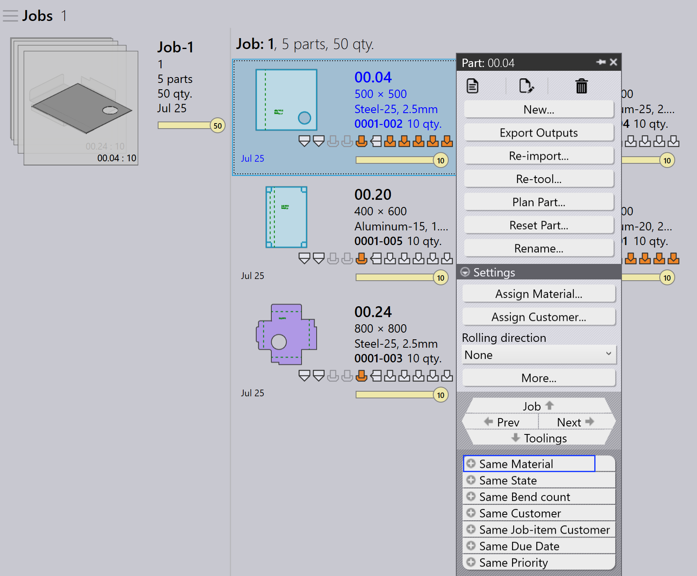

Αυτόματος σχεδιασμός
Ο Αυτόματος σχεδιασμός αυτοματοποιεί τη διαδικασία σχεδιασμού για εργασίες κάμψης και κοπής. Βοηθά στη βελτιστοποίηση της χρήσης μηχανημάτων, στη μείωση της σπατάλης υλικών και στη διαχείριση των προτεραιοτήτων εργασιών αποτελεσματικά.
Η γενική ροή εργασίας είναι πρώτα να σχεδιάσετε τα εξαρτήματα για τα μηχανήματα κάμψης και στη συνέχεια να σχεδιάσετε τα εξαρτήματα για τα μηχανήματα κοπής.
Σχεδιασμός κάμψης
Ένας Σχεδιασμός Κάμψης καθορίζει πώς κατανέμονται τα εξαρτήματα στα διαθέσιμα μηχανήματα κάμψης.
Παράδειγμα: Σχεδιασμός Κάμψης για 5 Εξαρτήματα (10 μονάδες το καθένα).
-
Κάντε κλικ στην επιλογή Σχεδιασμός εργασίας….
-
5 εξαρτήματα (50 μονάδες) ανατίθενται στο TBC-5030 B27
-
Μετά τον σχεδιασμό, η κατάσταση της εργασίας ενημερώνεται σε Bend Planned για συνολικά 50 μονάδες. Τα βήματα εργασίας ενημερώνονται με τα ανατεθειμένα μηχανήματα κάμψης και τις ποσότητες εξαρτημάτων.


Σχεδιασμός κοπής - τοποθέτηση
Μετά τον σχεδιασμό κάμψης, ο σχεδιασμός κοπής δημιουργείται με την τοποθέτηση εξαρτημάτων σε κατάλληλα μηχανήματα κοπής. Υπάρχουν δύο τρόποι τοποθέτησης:
Σχεδιασμός εργασίας για τοποθέτηση - εργασία
Χρησιμοποιήστε Σχεδιασμός εργασίας… για να τοποθετήσετε όλα τα εξαρτήματα της εργασίας μαζί. Η μηχανή τοποθέτησης επεξεργάζεται αυτόματα όλα τα εξαρτήματα με βάση την προτεραιότητα εργασίας, την ημερομηνία παράδοσης και το υλικό. Αυτό είναι ιδανικό όταν θέλετε ολόκληρη η εργασία να τοποθετηθεί και να σταλεί στην ουρά κοπής ταυτόχρονα.
-
Κάντε κλικ στο Σχεδιασμός εργασίας… και επιλέξτε οποιοδήποτε μηχάνημα.
-
Η μηχανή Pmonitor ξεκινά την εργασία τοποθέτησης.
-
Η μηχανή διαιρεί την εργασία όπως χρειάζεται για να μεγιστοποιήσει τη χρήση φύλλων.
| Δεν είναι δυνατόν να γίνει τοποθέτηση αναθέτοντας συγκεκριμένα υλικά σε συγκεκριμένα μηχανήματα. Για παράδειγμα, δεν μπορείτε να τοποθετήσετε το Material1 στο Machine1 και το Material2 στο Machine2 στην ίδια λειτουργία. |

Εδώ, ολόκληρη η εργασία τοποθετείται σε 5 τοποθετήσεις στο L49-3kw. Η κατάσταση της εργασίας ενημερώνεται σε 50 : Cutting Queue.
Σχεδιασμός εξαρτήματος για τοποθέτηση - παραγγελία
Χρησιμοποιήστε το Plan Part για τοποθέτηση σε επίπεδο παραγγελίας — δηλαδή, τοποθέτηση μόνο επιλεγμένων εξαρτημάτων από την εργασία. Συνήθως, κάνετε δεξί κλικ σε ένα εξάρτημα και επιλέγετε Same Material, έτσι μόνο τα εξαρτήματα με το ίδιο υλικό ομαδοποιούνται και τοποθετούνται μαζί.
Αυτό είναι χρήσιμο όταν θέλετε να ελέγξετε ποια εξαρτήματα τοποθετούνται — για παράδειγμα, εξαρτήματα του ίδιου υλικού ή μια συγκεκριμένη παρτίδα.


-
Στη σελίδα Job Detail, κάντε δεξί κλικ σε οποιοδήποτε εξάρτημα και επιλέξτε Same Material. Όλα τα εξαρτήματα με το ίδιο υλικό επιλέγονται.
-
Κάντε κλικ στο Plan Part… και επιλέξτε ένα μηχάνημα για τοποθέτηση.
-
Η μηχανή επεξεργάζεται μόνο τα επιλεγμένα εξαρτήματα και δημιουργεί τις τοποθετήσεις.

Εδώ, το steel-25 τοποθετείται στο Mits ML3015.